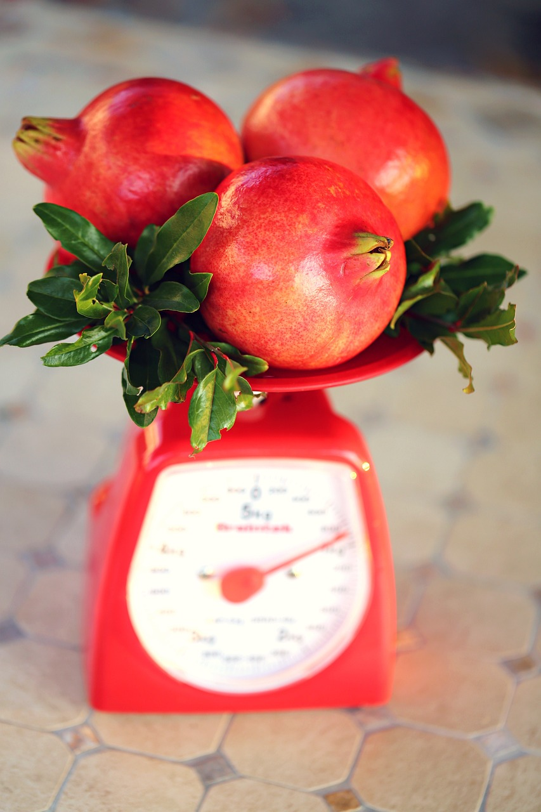
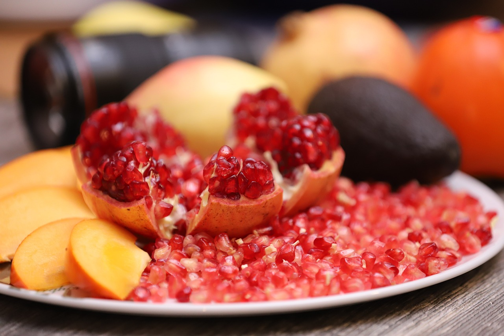
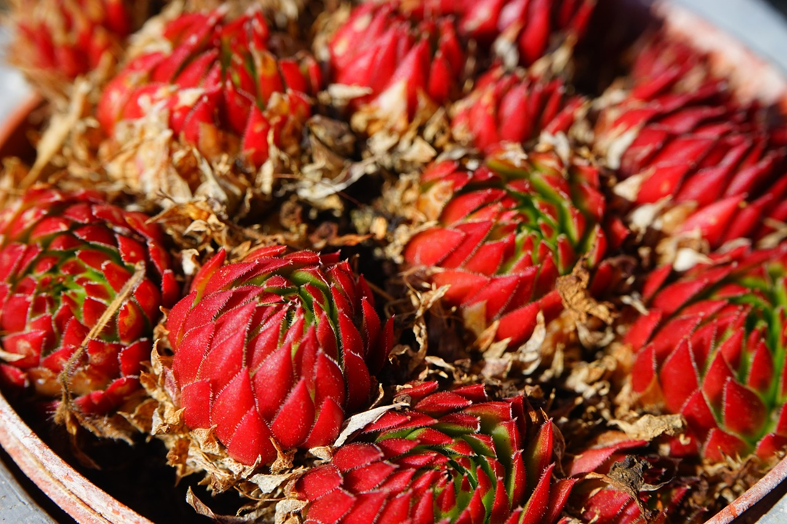
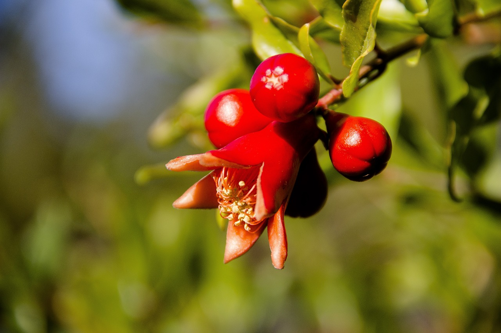

Багряні плоди. Сім фактів про користь граната і гранатового соку

Гранат - плодове дерево або чагарник, що досягає до 6 м у висоту. Кора сірувато-бура. Гілки тонкі, колючі, розгалужені, прямостоячі.
Гранат: користь
Гранати мають чималий склад поживних і корисних для здоров'я речовин. Корисні властивості граната:
1. Гранат має вражаючий протизапальний ефект
Хронічне запалення будь-якого органу призводить до розвитку серйозних захворювань - хвороб серця, появи раку, діабету 2 типу, хвороби Альцгеймера і навіть ожиріння.
Гранати мають потужні протизапальні властивості, які знижують ризики розвитку цих захворювань.
2. Гранат - засіб проти раку молочної залози
Рак молочної залози є одним з найбільш поширених видів раку у жінок. Екстракт граната може перешкоджати розмноженню клітин раку молочної залози, навіть вбиваючи деякі з них. Однак докази в даний час обмежуються лише лабораторними дослідженнями.
3. Гранат може знизити кров'яний тиск
Високий кровяний тиск (гіпертонія) є одним з провідних факторів серцевих нападів і інсультів.
В одному дослідженні люди з гіпертонією спостерігали значне зниження артеріального тиску після вживання 150 мл гранатового соку щодня протягом двох тижнів.
4. Гранат допомагає в боротьбі з артритом і болем в суглобах
Рослинні сполуки в гранаті мають протизапальну дію і допомагають в лікуванні артриту.
5. Гранатовий сік може знизити ризик серцево-судинних захворювань
Хвороби серця у даний час є найбільш поширеною причиною передчасної смерті. Пунічна кислота, основна жирна кислота в гранаті, захищає від хвороб серця.
6. Гранат покращує пам'ять
Дослідження за участю 28 людей похилого віку зі скаргами на пам'ять показало, що 230 мл гранатового соку в день значно поліпшували маркери вербальної і зорової пам'яті. Дослідження на мишах також показують, що гранат може допомогти в боротьбі з хворобою Альцгеймера
7. Гранат може поліпшити продуктивність вправ
Гранат багатий дієтичними нітратами, які, як було показано, покращують фізичну працездатність.


